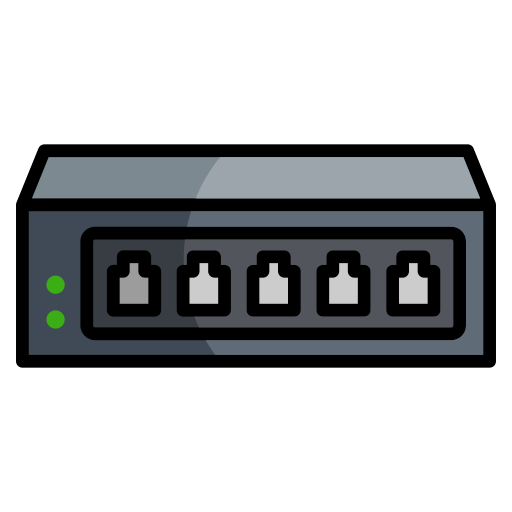

Sub-Redes IPv4
Endereço IP:
Número de Sub-redes:
Calcular
Gerando visualização...
Exemplo da Topologia

Switch de Sub-rede
❓
O que é?
Computador
Laptop
💡
Dica:
Use o scroll para zoom e arraste para movimentar. Passe o mouse sobre os dispositivos para mais informações!
Detalhamento das Sub-redes
Sub-Rede
IP da Rede
❓
Como calcular?
Primeiro Host
Último Host
Broadcast
❓
Como calcular?